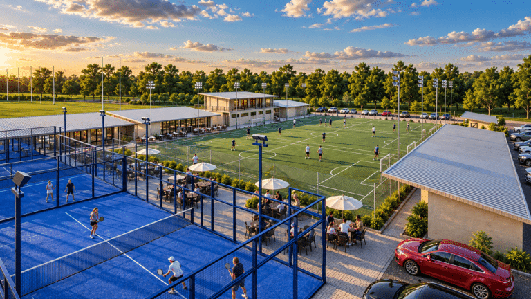
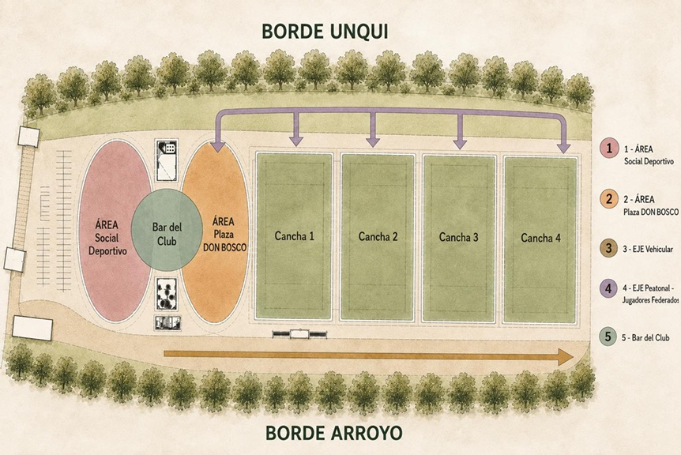

Master Plan Don Bosco Rugby: ordenar el club para crecer
El Ateneo presentó su Master Plan 2026, una herramienta de planificación para ordenar el crecimiento de la infraestructura deportiva, social e institucional.

El Ateneo Cultural y Deportivo Don Bosco presentó su Master Plan 2026, una herramienta de planificación integral diseñada para ordenar el crecimiento del club y consolidar su infraestructura deportiva, social e institucional.
Un plan para crecer con identidad
El proyecto busca establecer una visión integral que permita ordenar lo existente, definir prioridades y orientar las futuras intervenciones dentro de una lógica común.
El club se consolidó con el compromiso de generaciones de jugadores, familias, socios y dirigentes. Es una institución con fuerte identidad, con una infraestructura que se fue desarrollando de a poco.

Tres pilares
El Master Plan organiza el predio de Bernal alrededor de tres ejes:
- Frente institucional: concentra las actividades administrativas, institucionales y de atención.
- Plaza Don Bosco: el espacio social central, que vincula el bar, los edificios, las áreas deportivas y los recorridos peatonales.
- Borde activo peatonal: organiza las actividades deportivas: vestuarios, sanitarios, gimnasio y espacios sociales.
Prioridad al peatón
El plan separa la circulación de vehículos de los recorridos cotidianos. Los autos quedan en el borde y el interior pasa a ser peatonal, con calles, gradas, espacios verdes y áreas semicubiertas.

Deporte, familia, club
La infraestructura deportiva se complementa con espacios sociales, institucionales y recreativos. Deporte, comunidad y pertenencia en una misma estructura.
Crecimiento por etapas
Cada intervención tiene que funcionar de manera independiente, para adaptar el desarrollo a las prioridades del club. La primera obra ejecutada fue el nuevo ingreso al predio de Bernal.